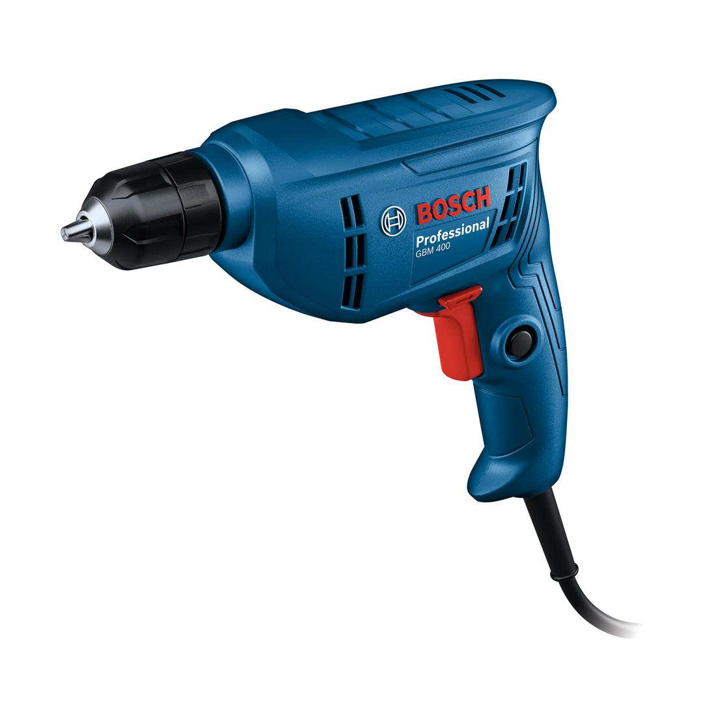
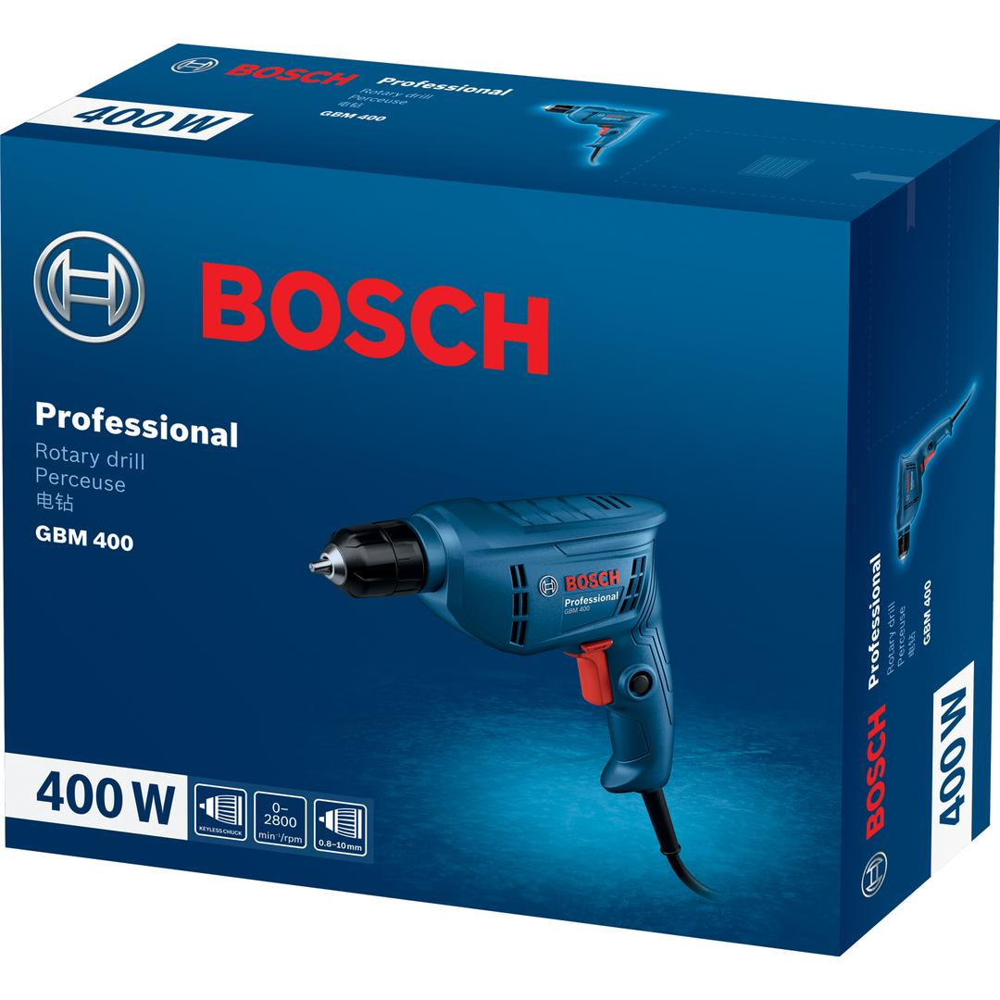

06011C10K0


The GBM 400 Professional is a slim and compact rotary drill with a powerful motor that can handle high-load jobs with great tolerance. Slender and ergonomically designed, this corded tool can be held comfortably with one hand for effortless operation. The compact size and reduced length facilitate flexible drilling or screw-driving in tight spaces such as cabinets or corners. This robust drill gets the job done quickly and efficiently.
| Rated input power |
400 W |
| Power output |
180 W |
| Weight |
1.283 kg |
| Tool dimensions (width) |
65 mm |
| Tool dimensions (length) |
240 mm |
| Tool dimensions (height) |
195 mm |
| Drilling diameter in wood |
20 mm |
| Drilling diameter in steel |
10 mm |
| Chuck capacity, min./max. |
10 mm |
| Drilling diameter in aluminium |
13 mm |
Powerful and compact for easy and flexible drilling
The GBM 400 Professional is the tool of choice for smooth drilling and screw-driving into wood, metal or plastic. Electricians, carpenters and construction professionals will appreciate the power and flexibility that this compact drill delivers.